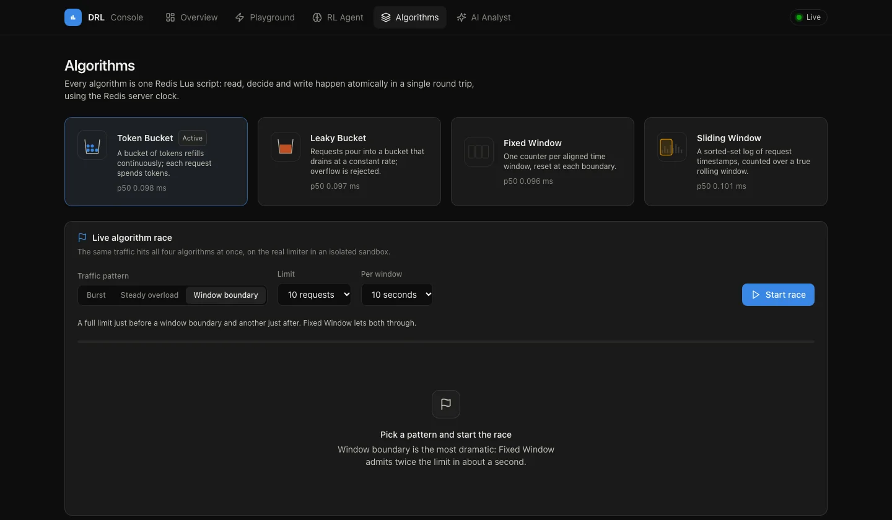

Distributed Rate Limiterwith adaptive AI limits
Four Redis-backed algorithms enforce per-client limits atomically across every node. A tabular Q-learning agent observes live traffic every 10 seconds and adjusts those limits, and a Claude-powered analyst turns what it sees into plain-English findings.
Three paths, each with one job
The hot path decides every request in one Redis round trip. The learning loop tunes limits in the background. The control plane, including Claude, runs only when an admin asks, so it never adds latency to a decision.
Hot path
Look up the client's rule, read its current limit from memory, then run one atomic Lua script in Redis. Two servers can never both spend the last unit of quota.
Learning loop
Each decision is reported to the Q-learning agent. Every 10 seconds it reviews each client's traffic, block ratio and trend, then raises, holds, or lowers the limit by 10%.
Control plane
Admin endpoints behind an API key change rules and run Claude analyses. Recommendations take effect only when an admin applies them.
What happens when you send a request
One POST /v1/check, from arrival to answer. Scroll through the steps.
The request arrives
It says who is asking, which endpoint (optional, for example
{"client_id": "client_b", "cost": 1}login), and how much the request costs.Input is validated
Client IDs may only use safe characters and the cost must be in range. Anything else gets 422 before the limiter does any work.
422 on bad inputThe rule is looked up
Each client and endpoint can have its own rule, for example 20 per minute on
client_b: 50 per 60 s/login. Others get the default of 100 per minute.The RL agent supplies the current limit
If adaptive limits are on, the agent may have moved this client's limit away from the rule. Reading it is a memory lookup with no network call.
effective_limit()One atomic decision runs in Redis
A single Lua script reads the client's state, decides, and writes back, all as one step on the Redis clock. Servers with different clocks still agree.
EVALSHA · read, decide, writeThe circuit breaker watches Redis
If Redis keeps failing, the breaker opens. The service then fails open with a degraded header, or fails closed with 503, depending on configuration.
FAIL_MODE=open | closedThe outcome is recorded
Prometheus counters and latency are updated, and the RL agent is told whether the request was allowed or blocked.
/metrics · agent.observe()The answer goes back
200 if allowed, 429 if blocked, with the limit, what remains, when it resets, which algorithm decided, and Retry-After when blocked.
X-RateLimit-* · Retry-After
Four strategies, one atomic script each
Pick one with the ALGORITHM setting. Only admitted requests consume budget, so rejected traffic never pushes a client further behind.
Token Bucket
Tokens refill continuously and each request spends some. Absorbs bursts up to the bucket size.
Leaky Bucket
Requests pour into a bucket that drains at a constant rate. Overflow is rejected, so output stays smooth.
Fixed Window
One counter per aligned window, reset at each boundary. Cheapest, but allows up to twice the rate across a boundary.
Sliding Window
A sorted-set log of timestamps counted over a true rolling window. Exact, with no boundary spikes.
Same traffic, four answers
Limit 10 per 10 seconds. Twenty requests straddle a window boundary within about 1.4 seconds. Measured on the real limiter through the sandbox endpoint, and you can rerun it on the live website.
Run the race yourselfA Q-learning agent tunes every limit
Each client, and each endpoint rule, gets its own Q-table. The agent starts out exploring at random and relies more on what it has learned as exploration decays. Learning happens off the request path.
State
Actions and reward
Learning
Inspect it
An AI traffic analyst with a human in the loop
On request, Claude reviews the limiter's state and the agent's recent decisions, explains what is happening, flags suspicious clients, and proposes rule changes. Nothing changes until an admin approves.
Snapshot
Rules, per-client counters, and RL decisions for the 50 busiest clients.
Claude analyzes
Schema-validated structured output: status, summary, findings.
Recommends
Proposed rule changes, each with the numbers behind it.
Admin approves
One click per change, validated exactly like a manual edit.
Rule applied
The RL agent restarts learning from the new limit.
Safe by design
Client IDs come from callers, so they are validated and treated as untrusted data in the prompt. Model output passes the same checks as an admin's input.
Bounded cost
At most 20 analyses per hour, enforced by the limiter's own token bucket. Token usage is exported as a Prometheus metric.
Off the hot path
Analyses run only on admin request, with server-side fallbacks and explicit handling of refusals and errors. Request latency is unaffected.
Watch it work in your browser
The dashboard runs against the real API. Click Run live demo on the Overview page and it sends traffic in four phases (normal use, a scraper, a login attack, and calm) while explaining every decision in plain English.

Overview and guided demo
Live decisions per second, allowed share, latency, busiest clients with RL-adjusted limits, and a narrated demo.
Playground
Send bursts or a steady stream of real requests and watch every 200 and 429 arrive, with quota charts.
RL agent and AI analyst
Learned limits, rewards and a decision log, plus Claude analyses you can apply with one click.
Built with
The API, Redis, and the dashboard are deployed separately and tested in CI.
Run it yourself
The live website needs nothing installed. To run everything locally you need Docker and Node.js 20 or newer.
# Clone the repository git clone https://github.com/apatha32/DRL-Distributed-Rate-Limiter-.git cd DRL-Distributed-Rate-Limiter- # Start Redis and the API (bound to localhost only) docker network create drl docker run -d --name drl-redis --network drl redis:7-alpine docker build -t drl-api . docker run -d --name drl-api --network drl -p 127.0.0.1:8000:8000 \ -e REDIS_URL=redis://drl-redis:6379/0 \ -e ADMIN_API_KEY=dev-admin-key \ drl-api # Start the dashboard, open http://localhost:5173 and click Run live demo cd dashboard && npm install && npm run dev # Or from a terminal: 60 requests for client_b (limit 50 per minute) for i in $(seq 60); do curl -s -o /dev/null -w "%{http_code}\n" -X POST http://localhost:8000/v1/check \ -H "Content-Type: application/json" -d '{"client_id": "client_b"}' done | sort | uniq -c # 50 200 # 10 429
See it live
Open the dashboard, run the live demo, and race the four algorithms against each other on the real limiter.